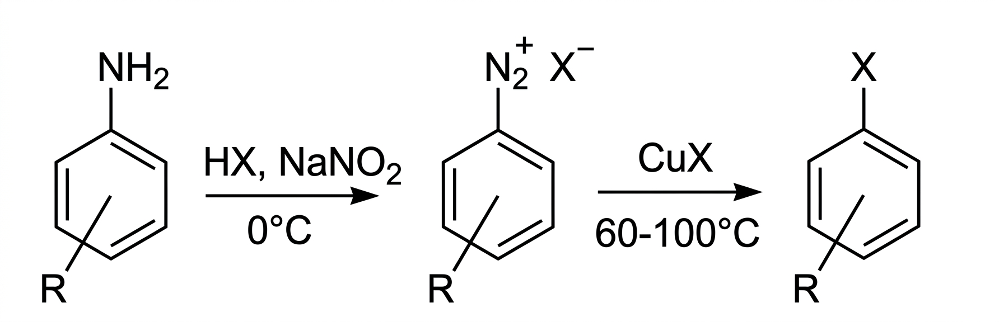
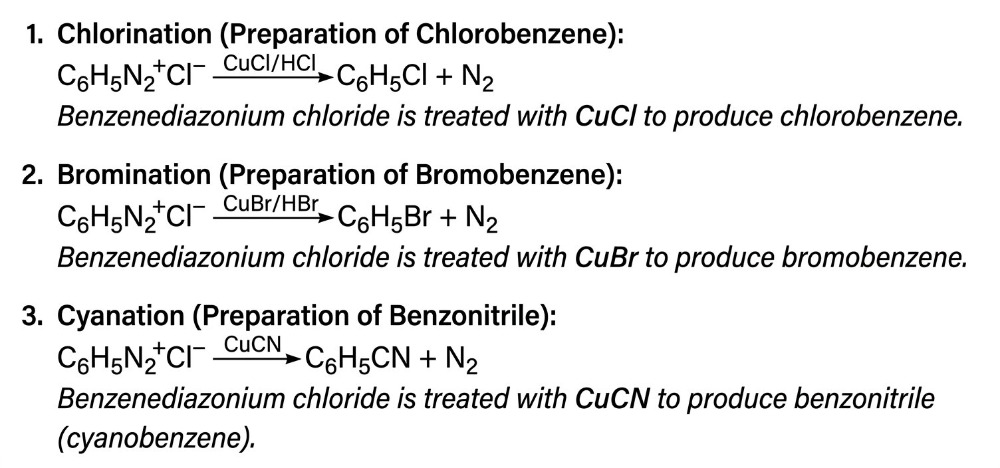
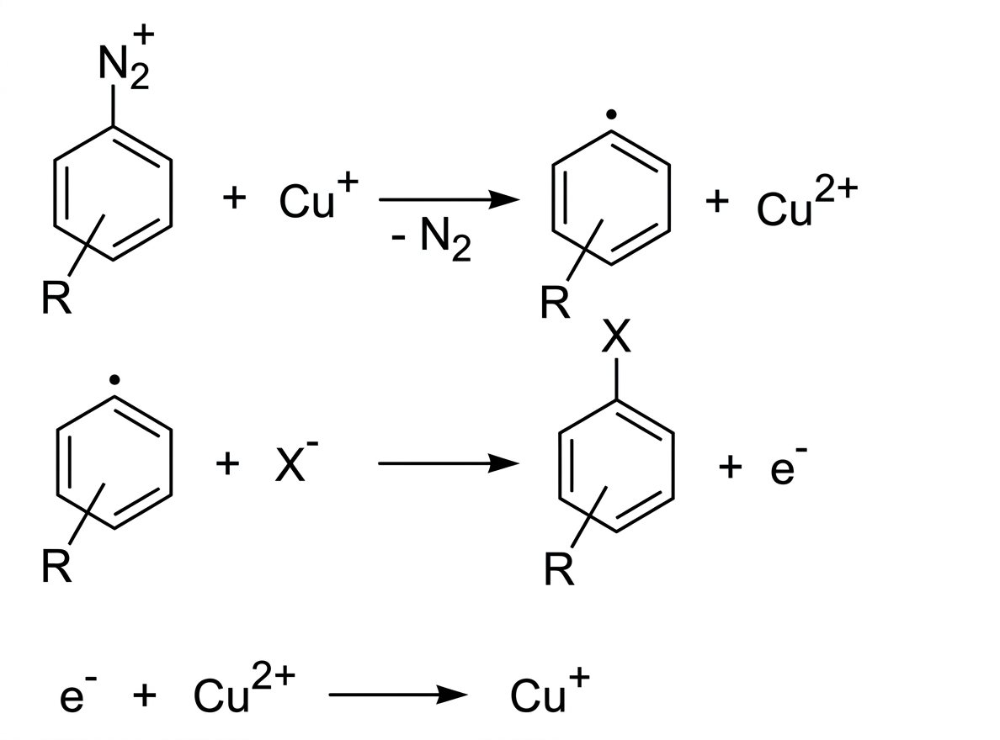

The Sandmeyer reaction is an important organic reaction in which an aromatic diazonium salt
is converted into aryl halides or nitriles using cuprous salts such as CuCl, CuBr, or CuCN.
In this reaction, an aromatic primary amine is first converted into a diazonium salt by treatment with
nitrous acid at low temperature (0–5°C). The diazonium group is then replaced by chlorine, bromine, or
cyanide in the presence of cuprous salts. The Sandmeyer reaction is widely used for the preparation of
substituted aromatic compounds.

Benzene diazonium chloride reacts with cuprous chloride to form chlorobenzene.

1. Formation of aromatic diazonium salt from primary aromatic amine.
2. Cuprous salt reacts with diazonium compound.
3. Nitrogen gas is eliminated from the diazonium group.
4. Halide or cyanide group replaces the diazonium group.
